Wie intelligente Systeme die Bestandsführung flexibler machen können
Ein mobiler Roboter
Warum vier Beine statt Räder?
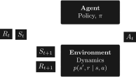
mit State \(S_t\), Action \(A_t\) und Reward \(R_t\),
sodass \[S_0, A_0, R_1, S_1, A_1, R_2, S_2, A_2, R_3, ..., R_T\]
Start des Trainings
gelerntes Stehen
gelernte Laufstile
Was man nicht will
Besser wäre
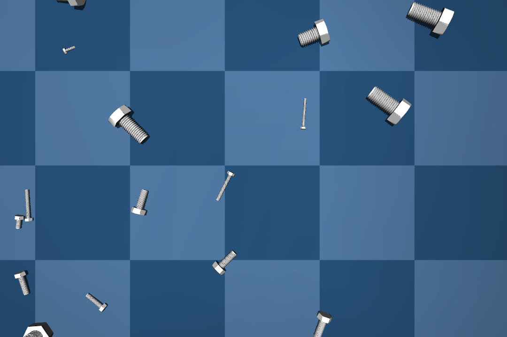
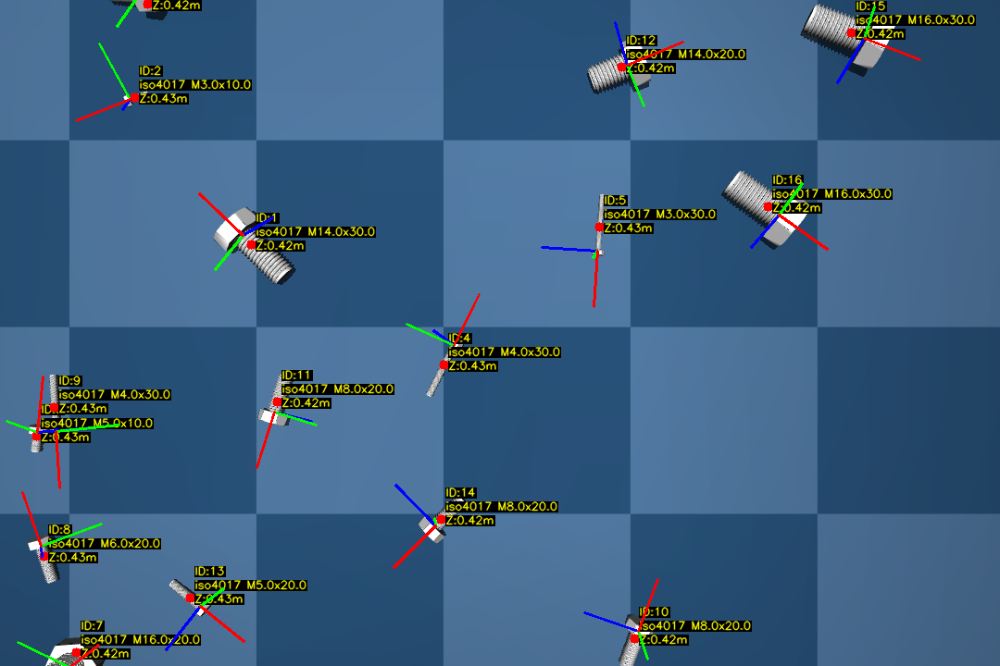
gerendertes Bild
mit allen Daten die zum Training benötigt werden
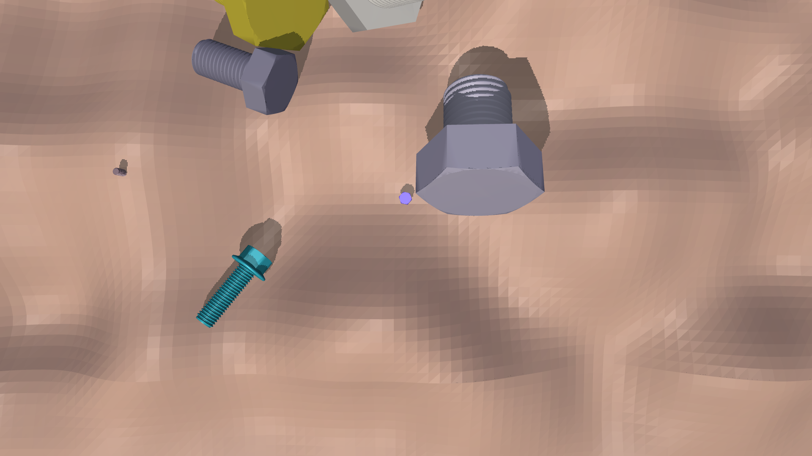
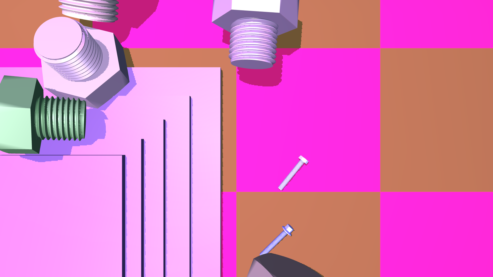
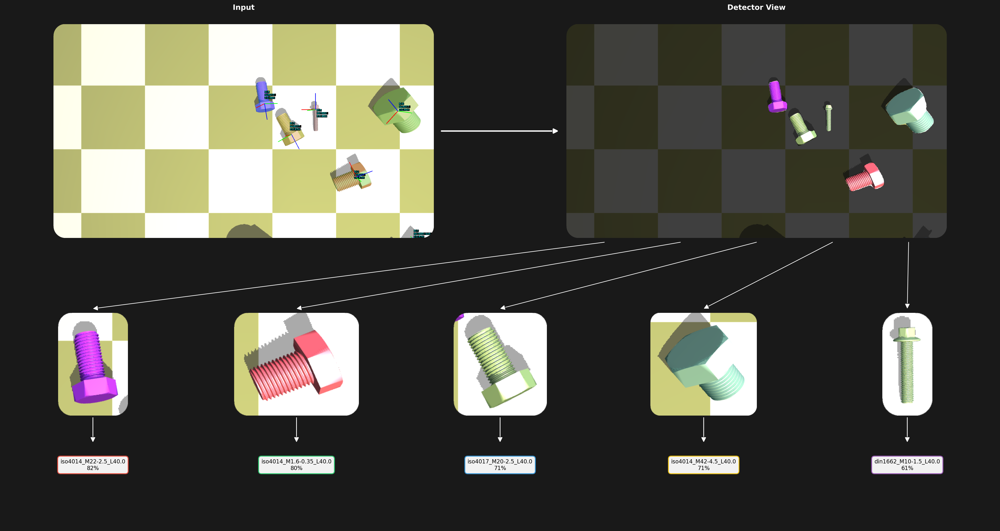
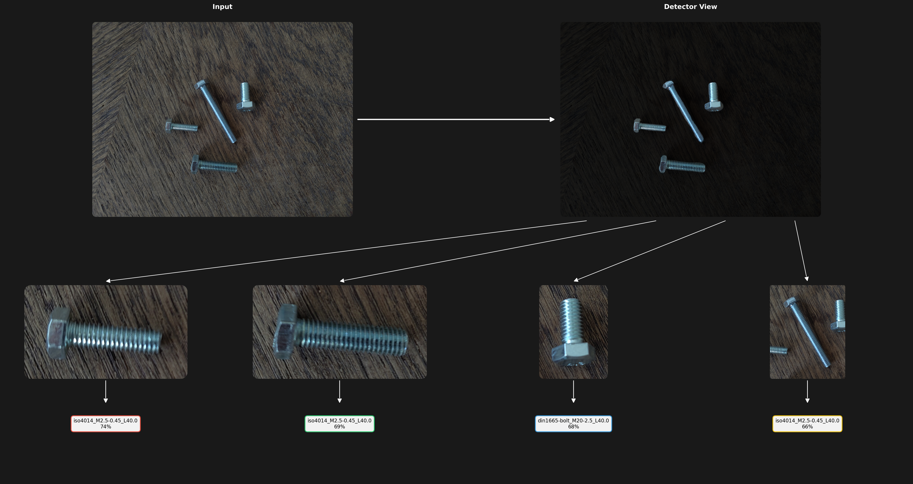
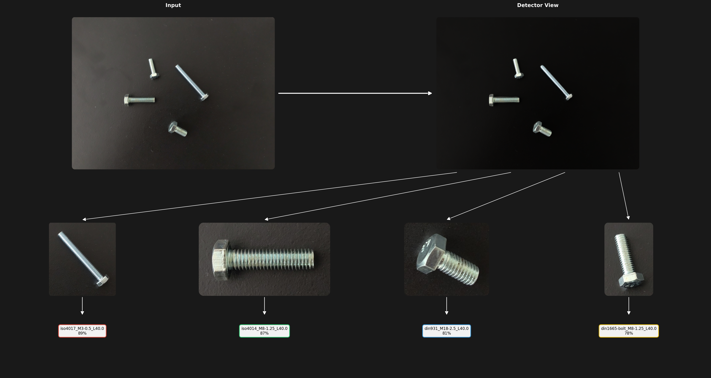
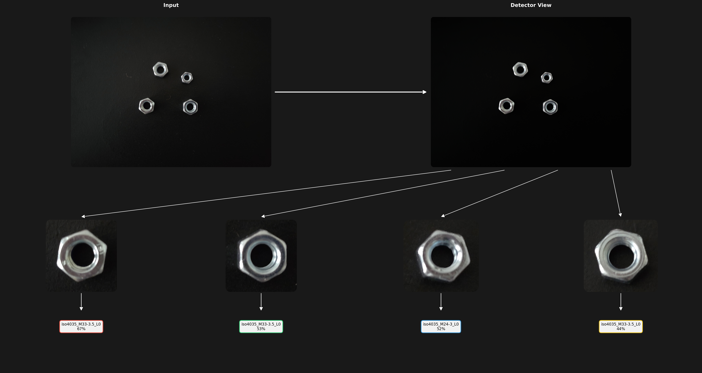
Work in Progress…
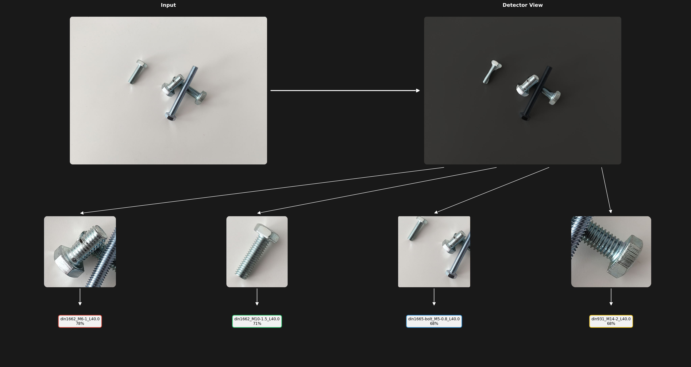
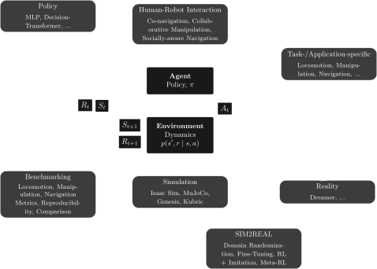
Entstanden in Bachelorarbeit "Implementierung eines parametrischen Gestensystems in einem 3D-gedruckten humanoiden Roboterarm", B.Eng. Valentin Kögel
Projekt HopeJr, the-robot-studio
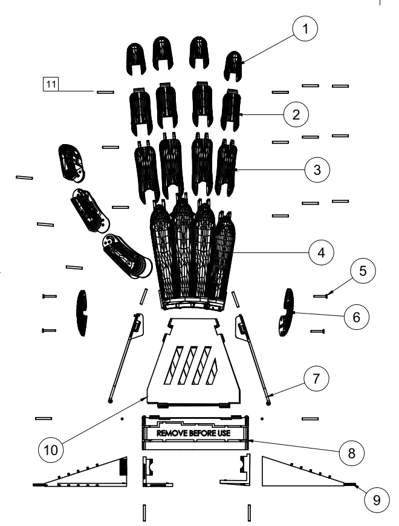
Projekt robot-nano-hand, the-robot-studio
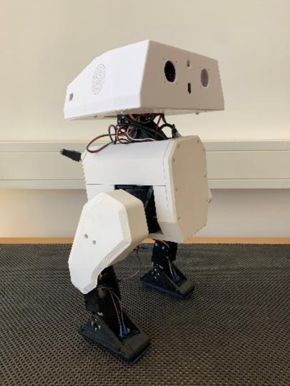
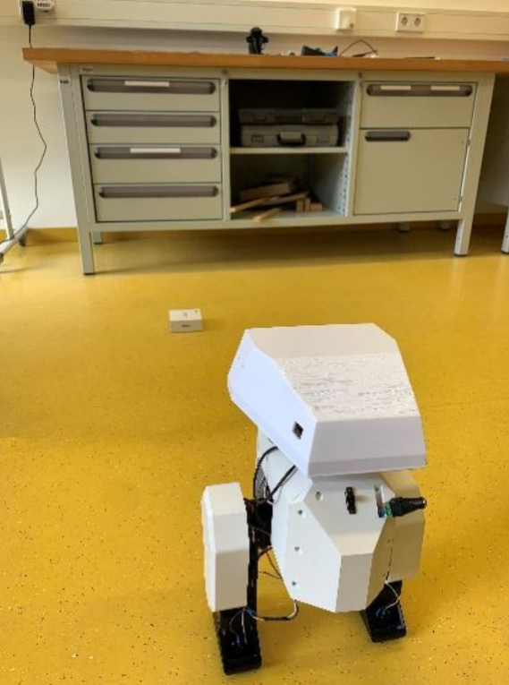
Abbildungen aus Bachelorarbeit "Konzeption und Implementierung eines Absturz- und Kollisionssicherungssystems für einen mobilen Laufroboter", Niklas Kohrmann
Projekt apirrone/Open-Duck-Mini
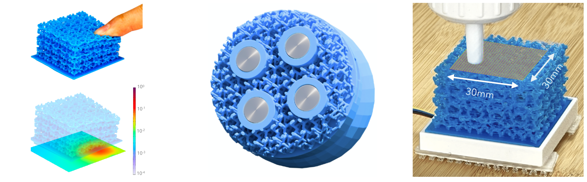
Projekt eFlesh: Highly customizable Magnetic Touch Sensing using Cut-Cell Microstructures
Venkatesh Pattabiraman and Zizhou Huang and Daniele Panozzo and Denis Zorin and Lerrel Pinto and Raunaq Bhirangi
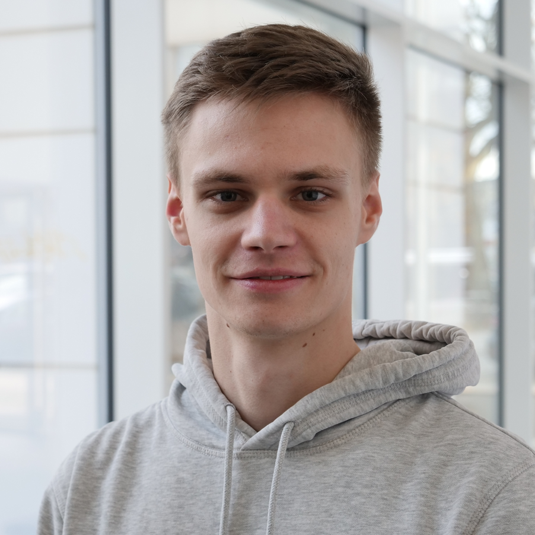
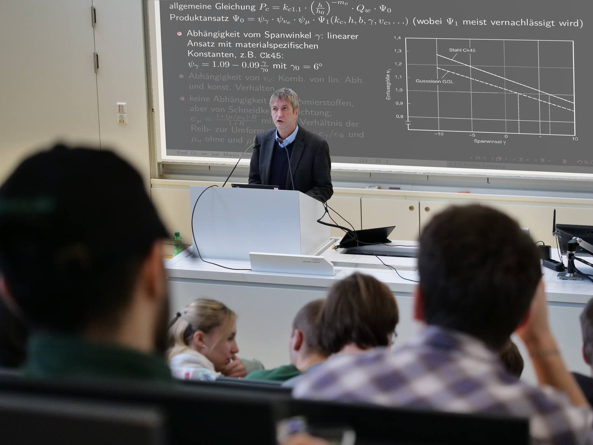